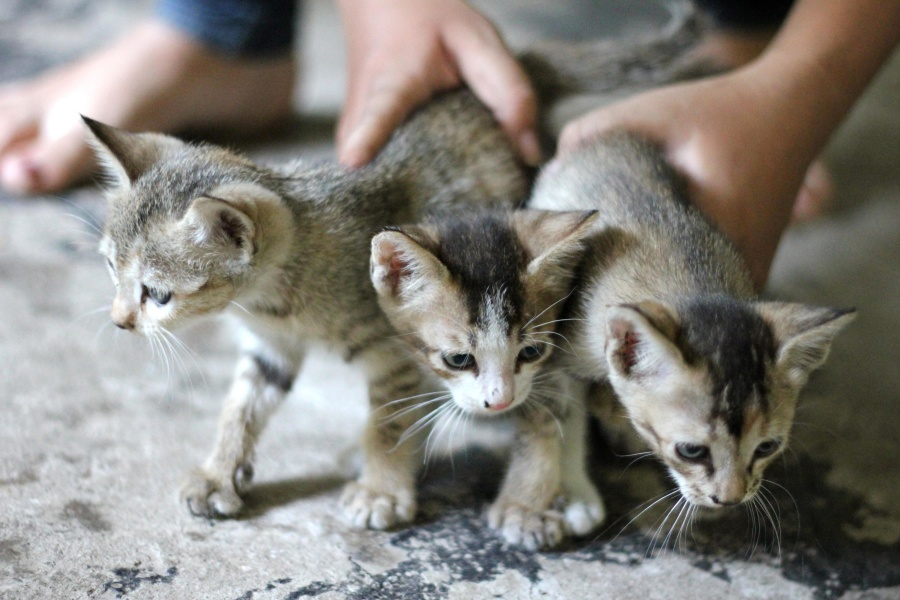
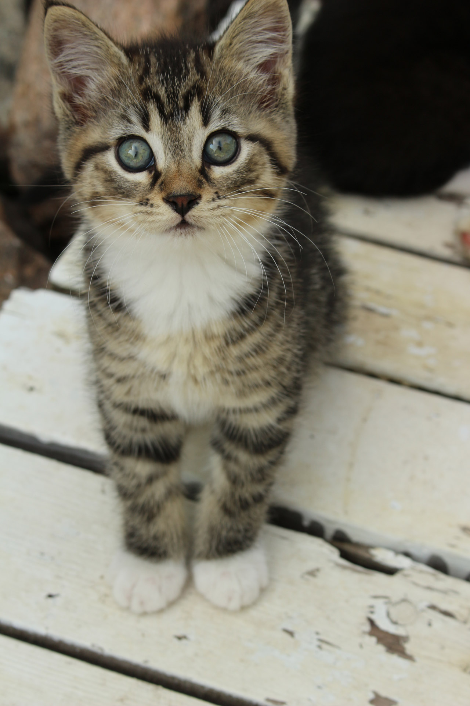
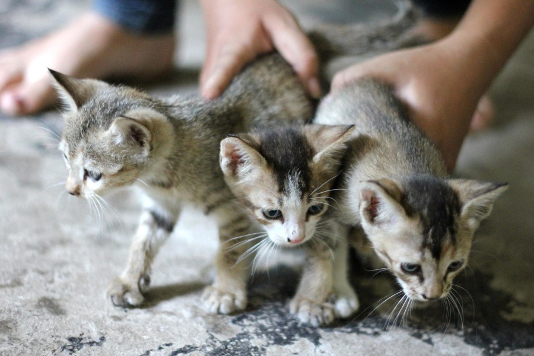
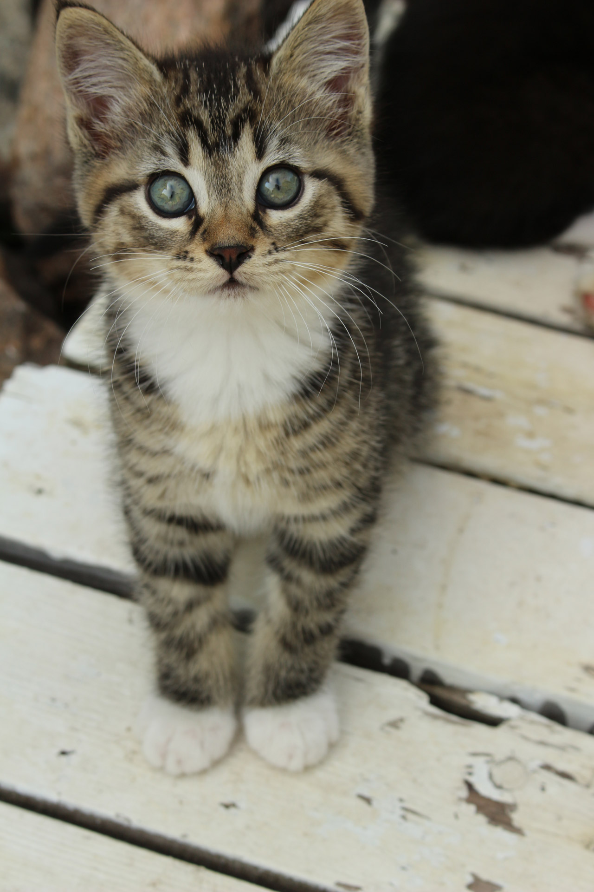
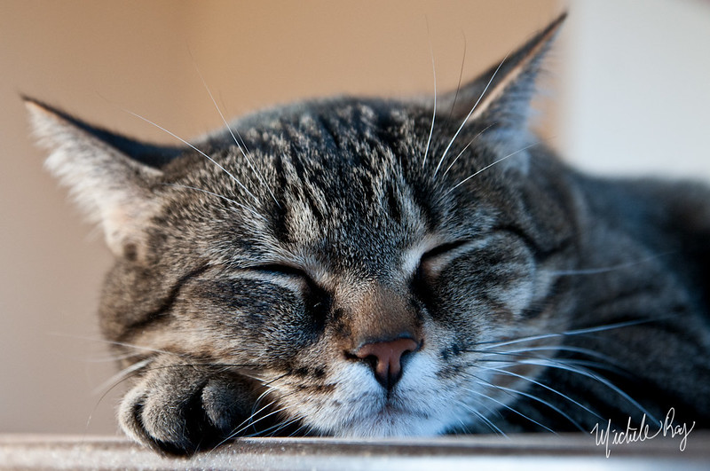

Les chatons sont vraiment trop mignons. En effet, comment résister à leur petite bouille de jeunes félins ? C'est totalement impossible, et pour cause :

 




Sur le site wikipédia on peut notamment lire :
Un chaton est un chat juvénile. Après la naissance, les chatons dépendent totalement de leur mère pour survivre, incapables de se nourrir et se déplacer seuls. Ils n'ouvrent normalement les yeux qu'après sept à dix jours. Après environ deux semaines, les chatons se développent rapidement et commencent à explorer les alentours de leur lieu de naissance. Après trois à quatre semaines supplémentaires, ils commencent à manger des aliments solides et leur dents définitives entament leur croissance. Les chatons domestiques sont des animaux très sociaux et apprécient généralement la compagnie humaine.
Et oui, le problème c'est qu'ensuite ils grandissent et les petites bêtises trop mignonnes deviennent de grandes bêtises. Il ne faut donc surtout pas réveiller un chat qui dort !!!!

C'est terrible dès qu'ils sont réveillés !